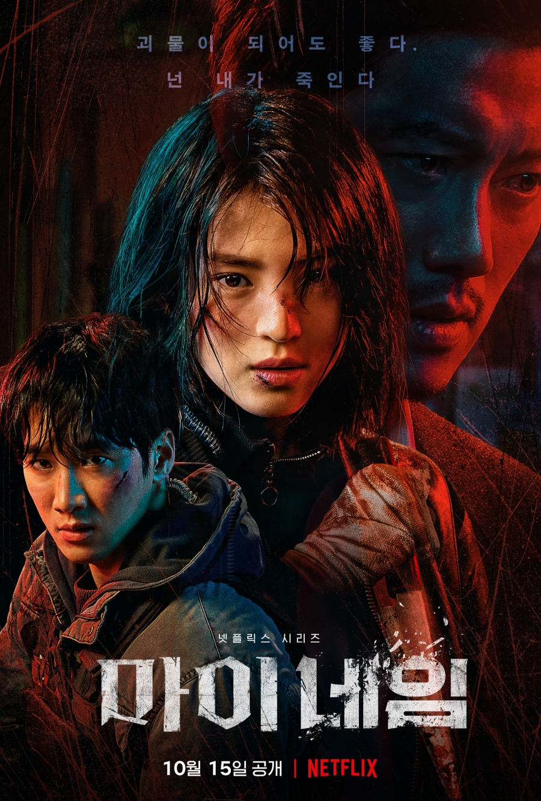

Guardian: The Lonely and Great God
Native Title: 도깨비
Screenwriter: Kim Eun Sook
Director: Lee Eung Bok
Genres: Comedy, Romance, Fantasy, Melodrama
Native Title: 도깨비
Screenwriter: Kim Eun Sook
Director: Lee Eung Bok
Genres: Comedy, Romance, Fantasy, Melodrama
Kim Shin was once an unbeatable general in Goryeo's military who died a
tragic death. He now possesses immortality but is tired of living while
everyone else around him dies. For 900 years, Kim Shin has searched for
his bride, a mortal who can pull out the sword and end his life. One day,
he encounters Ji Eun Tak, a positive, upbeat high school student who can see
the dead and has gone through tragic events, yet still stays strong. She
claims to be the Goblin's bride who can end his immortal life, but what
appears to be an easy task, only gets complicated, as the two fall in love.
| Main Cast | |||
|---|---|---|---|
.jpg) |
|||
| Gong Yoo | Kim Go Eun | Lee Dong Wook | Yoo In Na |
| Kim Shin | Ji Eun Tak | Grim Reaper | Sunny |

My Name
Native Title: 마이 네임
Screenwriter: Kim Ba-Da
Director: Kim Jin-Min
Genres: Action, Crime, Drama, Thriller, Mystery
Native Title: 마이 네임
Screenwriter: Kim Ba-Da
Director: Kim Jin-Min
Genres: Action, Crime, Drama, Thriller, Mystery
Yoon Ji-Woo's father dies suddenly. She wants to desperately take
revenge on whoever is responsible for her father's death. Yoon Ji-Woo
works for drug crime group Dongcheonpa.Choi Mu-Jin is the boss of the
drug gang. With the help of Choi Mu-Jin and to uncover the reason for
her father's death, Yoon Ji-Woo joins the police department and becomes
a mole for the drug group. Yoon Ji-Woo is assigned to work in the drug
investigation unit in the police department. Her partner there is
Detective Jeon Pil-Do.
| Main Cast | |||
|---|---|---|---|
| Han So Hee | Park Hee Soon | Ahn Bo Hyun | Chang Ryul |
| Yoon Ji Woo | Choi Mu Jin | Jeon Pil Do | Do Gang Jae |